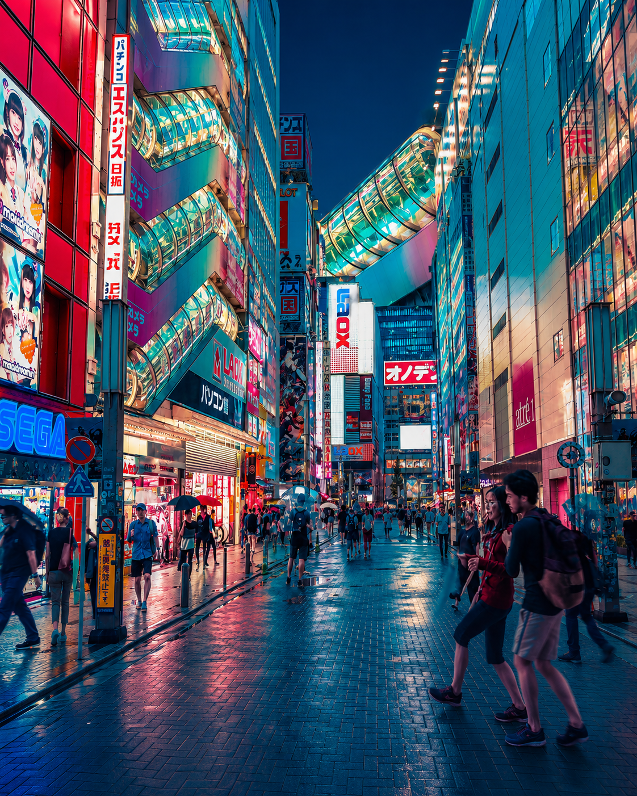
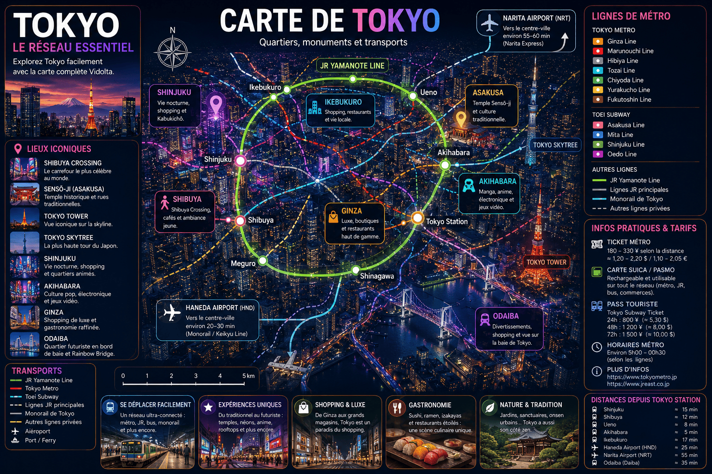
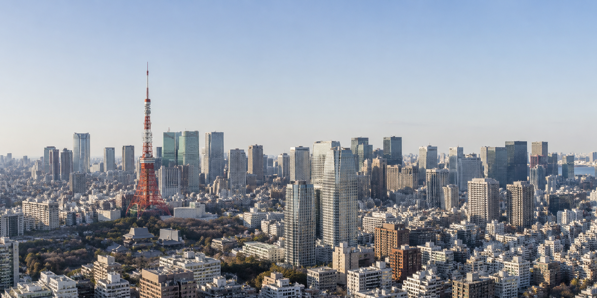

Le réseau ferroviaire de Tokyo permet d’explorer la ville rapidement.
Sushi, ramen, izakayas et expériences culinaires uniques.
Shibuya, Shinjuku, Akihabara et Ginza offrent des ambiances uniques.
Temples, gaming, sumo et traditions modernes se mélangent à Tokyo.

Voyage facilement avec les lignes JR, Tokyo Metro et les trains japonais.
ExplorerReste connecté partout dans Tokyo grâce aux eSIM et Pocket WiFi.
ExplorerDécouvre le Japon rapidement grâce aux célèbres trains à grande vitesse.
ExplorerExplore les restaurants les mieux notés et les expériences culinaires tokyoïtes.
ExplorerAssister à un match de baseball à Tokyo est une expérience incontournable au Japon.
Voir les billetsTokyo est une capitale mondiale du gaming, de l’anime et des événements esport.
DécouvrirTokyo mélange traditions japonaises, innovation futuriste et énergie urbaine unique au monde.
Chaque quartier possède sa propre identité : Shibuya pour les néons, Akihabara pour le gaming, Asakusa pour les traditions et Ginza pour le luxe.
Le métro Tokyo Metro et la JR Yamanote Line permettent de circuler facilement.
Tokyo possède certains des meilleurs restaurants du monde.
Shibuya Crossing, TeamLab, temples et Tokyo Skytree sont incontournables.
